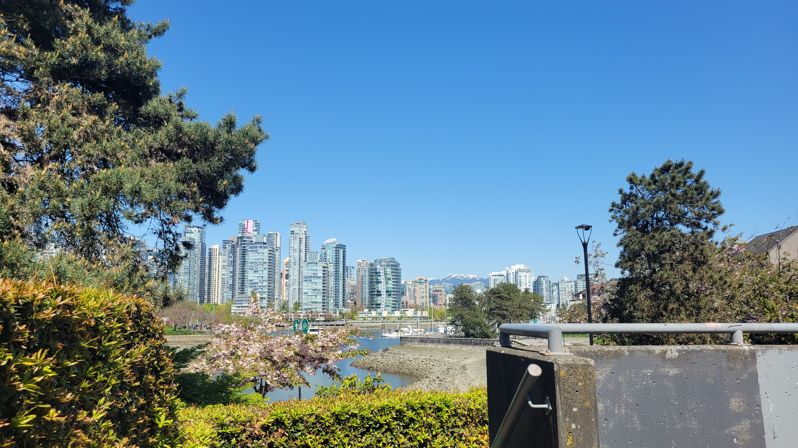

<html>

<head>

  <title>Leaflet Boilerplate</title>
  <meta charset="utf-8" />
  <meta name="viewport" content="width=device-width, initial-scale=1.0">

  <!-- Source for your Leaflet JavaScript and CSS -->
  <link rel="stylesheet" href="https://unpkg.com/leaflet@1.9.4/dist/leaflet.css"
    integrity="sha256-p4NxAoJBhIIN+hmNHrzRCf9tD/miZyoHS5obTRR9BMY=" crossorigin="" />
  <!-- Make sure you put this AFTER Leaflet's CSS -->
  <script src="https://unpkg.com/leaflet@1.9.4/dist/leaflet.js"
    integrity="sha256-20nQCchB9co0qIjJZRGuk2/Z9VM+kNiyxNV1lvTlZBo=" crossorigin=""></script>

  <!--Paste your data source script element here-->
  <script src="./community-gardens.js" charset="utf-8"></script>
  <script src="./parks-polygon.js" charset="utf-8"></script>

</head>

<body>
  <!-- Your map's HTML container -->
  <div id="mapid" style="height: 100%;"></div>

  <!-- Script for your map is contained within the <script> </script> element -->
  <script>

    // Initialize your map
    var mymap = L.map('mapid').setView([49.2521, -123.0981], 12);

    //Load the tile layer
    var osm = L.tileLayer('https://tile.openstreetmap.org/{z}/{x}/{y}.png', {
      attribution: '&copy; <a href="https://www.openstreetmap.org/copyright">OpenStreetMap</a> contributors',
    }).addTo(mymap);

    //Add your marker(s) here

    var outlookPopup = "<br>Resting spot with an outlook";

    // specify popup options 
    var outlookOptions =
    {
      'maxWidth': '210',
      'className': 'custom'
    }


    L.marker([49.26711745383916, -123.13196318772637],).bindPopup(outlookPopup, outlookOptions).addTo(mymap);


    // Add point layer here
    L.geoJSON(communityGardens, {
      onEachFeature: function (feature, communityGardens) {
        var popupContent =
          "<b>Name: </b>" +
          feature.properties.name +
          "<br><b>Number of Plots: </b>" +
          feature.properties.number_of_plots
          ;

        communityGardens.bindPopup(popupContent);
      },
    }).addTo(mymap);


  </script>

  <script>
    // Add polygon layer here
    L.geoJson(parks, { onEachFeature, style: style }).addTo(mymap);

    function onEachFeature(feature, parks) {
      if (feature.properties && feature.properties.park_name) {
        parks.bindPopup(feature.properties.park_name);
      }
    }

    function style(feature, parks) {
      return {
        fillColor: '#2aa858',
        color: '#71c791',
        weight: .5,
        fillOpacity: 0.8
      };
    }
  </script>

</body>

</html>